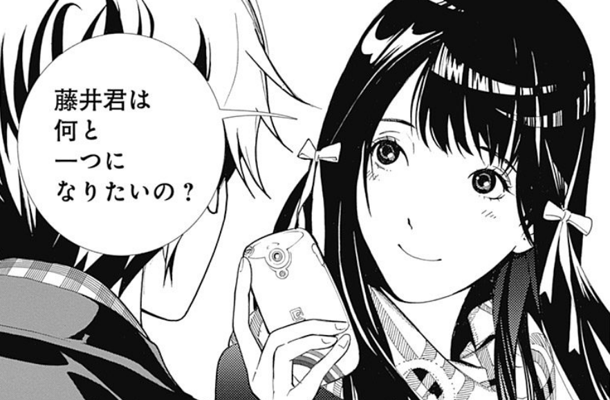
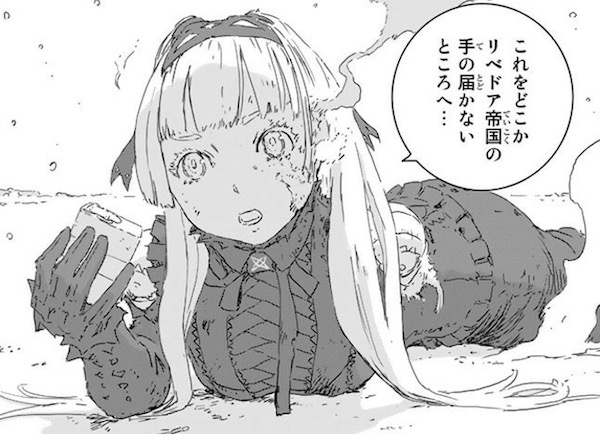

では、まず一本目！
バイオーグ・トリニティー

バイオーグ・トリニティーですね。では、あらすじドゾ！
手のひらに穴が開く現象「バグ」。なんでも吸い込めて、その特徴が使えるそんな常識がある とある世界線の地球。本作主人公の一人藤生は
ヒロイン榎本芙三歩が「好きすぎて死ぬ」と豪語するくらい好きである。もう一人の主人公穂坂正路とばバカやっていると藤井もバグが起き バグラー（バグに陥った人）になる。何を吸い込もう？そんなことを考えていると「世界のゆらぎ」を見てしまう。ガチガチに武装した穂坂が藤井を殺そうとするが友情を取り、命令を背いてしまう。そんな穂坂を殺そうと現れた大男が穂坂を瀕死に追いやる。そんな穂坂を見過ごすわけにもいかず、藤井は穂坂を吸い込む。二人で一人になった藤井と穂坂で、大男と戦闘を開始する。。。。
大倉維人さんのバイオーグ・トリニティーです。バカバッカやったり、けんかをしたりしていた、主人公同士の共闘はいくつになっても興奮しますよね。本作は、あまり性格を知れずに共闘となってしまいますが読めば読むほど熱くなること間違いなし！主人公二人とヒロインそんな高校生が織りなす、甘酸っぱくどこか儚い恋を叶えるために世界の謎まで解き明かす。高校生恋愛バトル漫画です。
本作は、完結しており一気に見ることが可能です！興味がわいたら見てみてください！
それでは2本目！
人形の国

二瓶勉先生の人形の国ですね。では、少しあらすじをどうぞ！
人口天体アポシズム地底との戦争に敗れた人々は極寒の地表で暮らしていた。地表では体が人形になってしまう人形病が蔓延し、攻撃してくる自動機械、そんな地獄でも人々は生きていた。「白菱の梁」という居住区で暮らしている主人公「エスロー」は生徒を連れて戦闘訓練を行っていた。その帰り、リベドア帝国という、残虐非道な国の軍人に終われている少女を見つける。関わりたくないエスローであったが、生徒が少女を助けてしまう。少女をめぐって戦闘になり何とか勝利する。少女から受けとったものは、自分を不思議な力を持つ人形にする装置であった。帰宅し、一夜明けた時には、居住区がリベドアにより急襲を受けていた、仕方なくエスローが人形になり・・・・
ざっとこんな感じの導入ですね…思っている以上に力のあるリベドア帝国を打倒する、復讐することができるのか。人形同士の戦闘がすっきりしていて、非常に読みやすいですね。「主人公つよ！」っといった展開やハラハラするような展開もあり戦闘シーンは見所間違いなし！ひとつの天体で織りなす壮大な復讐冒険の物語です。
まだまだ、この先が気になる漫画です。ぜひ気になったら読んでみてください！